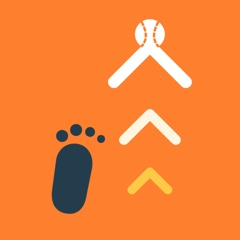
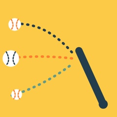
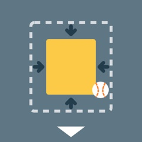
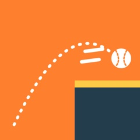
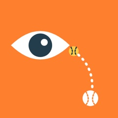
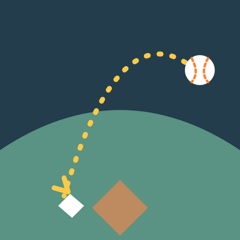

力量是從腳開始的打擊
為什麼練習要變來變去？教學觀點打擊
兩好球時，主審的好球帶真的會變小嗎？棒球相關新聞與知識教學觀點
揮棒速度快 10 公里，球能多飛幾公尺？打擊棒球相關新聞與知識難度剛剛好，才學得最多教學觀點
打者是「邊看邊調整」打擊
一朗守右外野，長傳本壘要不要轉傳？守備棒球相關新聞與知識場邊的提醒，是幫忙還是干擾？教學觀點打擊一句比喻，勝過八個口令教學觀點少講手肘，多給目標教學觀點投球講了就會改？一年後只改了 44%投球教學觀點沒有「標準揮棒」這件事打擊教學觀點這裡還沒有符合的文章，換個關鍵字，或看看其他主題。